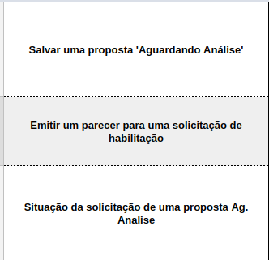
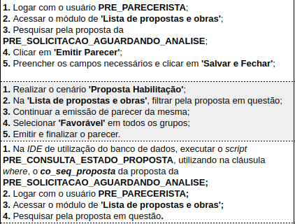
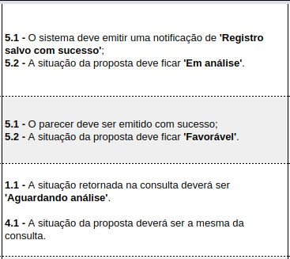
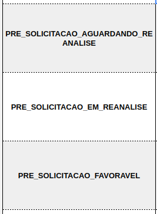
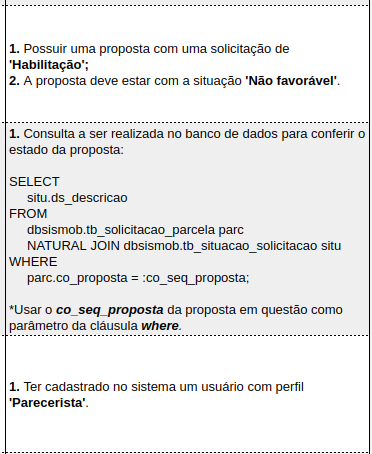

O que é
Test Review é uma maneira de levantarmos os Casos de Teste de uma tarefa específica, em maioria, antes da mesma ser desenvolvidada. Com isso, é proporcionado ao desenvolvedor todos os cenários que aquela tarefa pode impactar e assim, fazer com que a mesma tenha mais qualidade antes mesmo do Tester da equipe pegar a tarefa.
Além disso, o Test Review também serve como uma forma de realizarmos testes pareados e de nivelação de conhecimento.
Como é realizado
A cada versão desenvolvidada, é criado uma planilha no drive (disponível aqui) contendo todas as tarefas planejadas daquela versão, sendo que cada equipe é responsável pelas suas respectivas tarefas, tendo seu dever mantê-la atualizada a cada nova tarefa recebida.
Todos os casos de teste devem estar disponíveis quando o prazo para o desenvolvimento da versão foi encerrado, ou seja, duas semanas antes de sua efetiva entrega.
É extremamente importante que todo Test Review de uma tarefa seja visto por algum outro membro, interno da equipe ou não, para assim os cenários serem validados.
Para cada tarefa, é necessário duplicar a aba “Modelo”, renomear a nova aba para o número da tarefa e então inserir a tarefa na lista de tarefas da equipe na aba “Tarefas”. Importante manter a lista de tarefas da equipe ordenada de forma crescente e botar um hiperlink para a aba que se encontra o test review da tarefa.
Para uma melhor manuntenção do Test Review é essencial que os casos de testes sigam as convenções de escrita.
Convenções
Colunas
O aba “Modelo” já possui a maior parte das configurações necessárias para criar o caso de teste, sendo que são 6 colunas para a descrição do CDT e 2 colunas para os Pré-Requisitos;
Casos de Teste:
- Id: Identificação númerica do CDT.
- Cenário: Uma breve descrição do que se espera do cenário em questão.
- Passos: O que é necessário realizar no sistema para poder realizar a comparação de está correto ou não.
- Resultados esperados: Tudo que precisa ser validado no sistema, ou o que o sistema precisa fazer, para considerar que o cenário em questão seja dado como correto.
- Situação: Estado atual do cenário, se está correto ou não.
- Observações: Qualquer observação que seja relevante para o cenário, ou uma descrição do erro, caso o mesmo esta incorreto.
Pré-requisitos:
- Nome: Uma breve descrição do que o pré-requisito se trata.
- Descrição: Descrição detalhada de uma condição que é necessária para realizar alguns dos cenários descritos.
- Id
- Númerico, sequencial, só deve estar preenchido caso exista o cenário;
- Negrito e centralizado.
- Cenário
- Deve ser direto e objetivo;
- Negrito e centralizado.

- Passos
- Devem ser precisos, de fácil entendimento, usualmente apenas ação no sistema por passo. Ações mais simples podem ser concatenadas em apenas um passo.
- Cada passo de cada cenário deve seguir o padrão: [NÚMERO EM NEGRITO].[ESPAÇO] [DESCRIÇÃO DO PASSO][PONTO E VÍRGULA] / [PONTO FINAL (caso seja o último passo)];
- Referências aos módulos, botões, labels, qualquer coisa pertencente ao sistema deve estar entre aspas e em negrito, utilizando somente a primeira inicial em maiúscula;
- Alinhado a esquerda.

- Resultados esperados
- Devem ser precisos, de fácil entendimento, usualmente apenas UMA verificação por item.
- Deve sempre referenciar o passo em que é feito a verificação e ser sequencial: [NÚMERO EM NEGRITO].[SEQUÊNCIA] - [ESPAÇO] [DESCRIÇÃO DO RESULTADO ESPERADO][PONTO E VÍRGULA] / [PONTO FINAL (caso seja o último passo)];
- Referências aos módulos, botões, labels, qualquer coisa pertencente ao sistema deve estar entre aspas e em negrito, utilizando somente a primeira inicial em maiúscula;
- Deve pular uma linha ao realizar a verificação de um resultado esperado de passos diferentes;
- Alinhado a esquerda.

- Situação
- Deve representar a situação do cenário;
- Selecionar apenas uma das opções disponíveis;
- Centralizado.
- Observações
- Uma observação
- Centralizado.
- Nomes das pré-condições
- Preferencialmente iniciar com a palavre PRE_
- Utilizar as mesmas regras da coluna ‘Cenário’

- Pré-condições
- Utilizar as mesmas regras da coluna ‘Passos’.

Exemplos
Alguns exemplos mais completos e detalhados podem ser observados nos test review das tarefas: